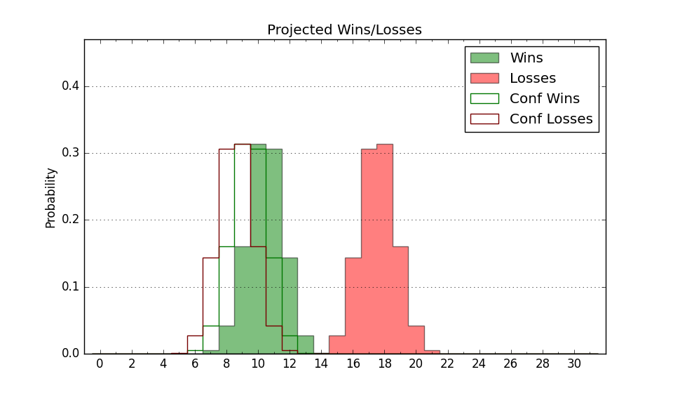

| Home | Game Probabilities | Conferences | Preseason Predictions | Odds Charts | NCAA Tournament |
| City: | Fargo, North Dakota | |
| Conference: | Summit (4th)
| |
| Record: | 6-5 (Conf) 7-14 (Overall) | |
| Ratings: | Comp.: -5.9 (233rd) Net: -5.8 (233rd) Off: 100.5 (208th) Def: 106.4 (257th) SoR: 0.0 (155th) |
| Remaining | ||||||
|---|---|---|---|---|---|---|
| Date | Opponent | Win Prob | Pred. | |||
| 2/4 | @ South Dakota St. (170) | 23.0% | L 65-74 | |||
| 2/9 | Nebraska Omaha (293) | 74.9% | W 77-70 | |||
| 2/11 | Denver (265) | 70.5% | W 77-71 | |||
| 2/16 | @ UMKC (249) | 38.1% | L 64-67 | |||
| 2/18 | @ Oral Roberts (42) | 5.9% | L 68-88 | |||
| 2/23 | St. Thomas MN (229) | 64.1% | W 76-72 | |||
| 2/25 | Western Illinois (244) | 67.1% | W 75-70 | |||
| Previous | Game Score | |||||
| Date | Opponent | Win Prob | Result | Off | Def | Net |
| 11/7 | @Arkansas (21) | 3.8% | L 58-76 | -4.0 | 13.5 | 9.5 |
| 11/10 | @Kansas (8) | 2.5% | L 59-82 | -0.9 | 9.5 | 8.5 |
| 11/13 | Pacific (197) | 55.7% | L 86-91 | 3.1 | -8.9 | -5.8 |
| 11/17 | @Indiana St. (108) | 14.5% | L 75-101 | -2.7 | -11.5 | -14.2 |
| 11/25 | (N) Northern Colorado (280) | 59.0% | L 70-80 | -8.7 | -7.2 | -15.8 |
| 11/26 | @New Mexico (57) | 6.7% | L 55-76 | -14.4 | 15.2 | 0.8 |
| 11/27 | (N) Jacksonville St. (290) | 61.4% | L 71-81 | -3.8 | -17.9 | -21.7 |
| 12/3 | @Eastern Washington (124) | 16.9% | L 70-78 | 3.0 | 3.7 | 6.7 |
| 12/5 | @Portland (134) | 17.9% | W 67-62 | -6.3 | 26.2 | 19.9 |
| 12/10 | Montana (184) | 52.5% | L 75-82 | 3.4 | -18.0 | -14.6 |
| 12/19 | @Western Illinois (244) | 37.4% | L 60-79 | -16.4 | -7.2 | -23.6 |
| 12/21 | @St. Thomas MN (229) | 34.4% | L 68-78 | 0.6 | -6.8 | -6.2 |
| 12/30 | @North Dakota (312) | 52.6% | W 71-49 | 3.2 | 28.0 | 31.2 |
| 1/5 | South Dakota St. (170) | 50.4% | W 65-59 | 6.7 | 0.9 | 7.6 |
| 1/7 | South Dakota (310) | 78.9% | W 73-61 | -3.0 | 11.9 | 8.9 |
| 1/12 | @Denver (265) | 41.2% | W 90-70 | 30.3 | -0.1 | 30.2 |
| 1/14 | @Nebraska Omaha (293) | 46.7% | W 78-65 | 11.7 | 11.3 | 23.0 |
| 1/19 | Oral Roberts (42) | 17.5% | L 69-92 | -4.6 | -12.7 | -17.3 |
| 1/21 | UMKC (249) | 67.7% | L 73-75 | 10.4 | -17.8 | -7.5 |
| 1/27 | North Dakota (312) | 79.1% | W 91-75 | 21.9 | -6.4 | 15.4 |
| 2/2 | @South Dakota (310) | 52.3% | L 62-71 | -19.2 | -1.9 | -21.1 |
| Stats & Trends | |||||
|---|---|---|---|---|---|
| Current | Day | Week | Month | Season | |
| Composite | -5.9 | -0.9 | +0.0 | +1.5 | +2.9 |
| Comp Rank | 233 | -8 | -- | +22 | +30 |
| Net Efficiency | -5.8 | -0.9 | -0.1 | +1.4 | -- |
| Net Rank | 233 | -7 | -1 | +18 | -- |
| Off Efficiency | 100.5 | -0.9 | +0.4 | +3.8 | -- |
| Off Rank | 208 | -20 | +3 | +54 | -- |
| Def Efficiency | 106.4 | +0.0 | -0.4 | -2.4 | -- |
| Def Rank | 257 | -- | -8 | -30 | -- |
| SoS Rank | 185 | -5 | -29 | -118 | -- |
| Exp. Wins | 10.4 | -0.7 | -0.4 | +1.2 | -1.4 |
| Exp. Conf Wins | 9.4 | -0.7 | -0.4 | +1.2 | +0.4 |
| Conf Champ Prob | 0.0 | -0.0 | -0.0 | -0.2 | -4.9 |

| Advanced Stats | ||
|---|---|---|
| Stat | Value | Rank |
| Off Eff FG % | 0.509 | 159 |
| Off Ast Ratio | 0.132 | 252 |
| Off ORB% | 0.229 | 287 |
| Off TO Rate | 0.167 | 254 |
| Off FT Ratio | 0.338 | 110 |
| Def Eff FG % | 0.509 | 195 |
| Def Ast Ratio | 0.135 | 119 |
| Def ORB% | 0.230 | 55 |
| Def TO Rate | 0.113 | 359 |
| Def FT Ratio | 0.275 | 94 |